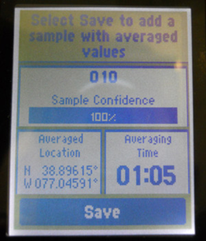

Garmin eTrex 10 Guide
Download a PDF Version of this Guide
How to Setup Your Unit
Turning on Your Unit
Turn on your GPS unit by pressing the button on the right side of the device labeled LIGHT. The device will automatically take you to the main menu.
Acquiring Satellites and Getting a Fix
The first thing you need to do with your GPS is get a GPS signal. Standing outside, scroll down to the Satellite menu and press down on your rocker / knob to select it.
Make sure you are outside and in an area with minimal overhead cover (buildings, trees) if possible. The strength of your satellite connections depend on these two factors.
Your GPS will need a few minutes to acquire / connect to satellites and get a GPS “fix”, a precise reading of where you are on Earth. This should take anywhere from 30 seconds to 5 minutes, depending on where you are and when the last time you booted up your GPS was.
When your device stops saying “Acquiring Satellites” and instead shows bars along the bottom, you’ve acquired a fix. YOU CANNOT COLLECT DATA UNTIL THIS HAPPENS.
The bars at the bottom show the signal strength of the different satellites. The more high bars, the better.
Look at the top portion of the screen to check the accuracy of the device. The box labeled GPS in the upper right-hand corner will show you how accurate the device is. If in an open area, leave the GPS unit still until the accuracy is less than 30m before taking a point.
If in an area with a large amount of buildings, leave the GPS device still until the accuracy is less than 10m (if at all possible) before taking a point. Try leaving the device on a flat surface if you have a hard time getting the accuracy to improve.
More accurate points are always better. If you have the time, try to get the most accurate points possible, particularly in crowded settings where errors are costly. Please see the section on Collecting and Managing Accurate Data for recommended data collection methods.
A few notes:
Setting Up Datums and Projections
Scroll to the SETUP menu and then scroll to the UNITS options. Press in on the knob to select UNITS.
Press in on the knob to view the drop down menu for DISTANCE AND SPEED. This will allow you to set the system of measurement for your device. Scroll down to Metric (for kilometers) or Statute (for miles). Press in on the knob to make your selection.
Press the KNOB DOWN to the ELEVATION drop down menu and press in on the knob to select it. Scroll to Meters if you selected Metric in the Distance and Speed menu above or Feet (ft/min) if you previously selected Statue. Press in on the knob to make your selection.
Press the BACK button on the right side of your device once to return to the SETUP dropdown menu.
Scroll down to the POSITION FORMAT dropdown menu. Press in on the knob to select this menu.
Press in on the knob to select the POSITION FORMAT option. The first selection menu should be hddd.dddd°. Click in on the knob to select the hddd.ddd° format.
Scroll down to the MAP DATUM and MAP SPHEROID options. The default options for both categories should be WGS 84. If this is the case, LEAVE THE OPTIONS as is. If not, press in on the knob over each option respectively and press the KNOB DOWN to scroll to select WGS 84.
Press the BACK button on the right side of the device twice to retun to the main menu. You have now properly setup your units.

How to Take a Point
Setting Up to Take a Point
Make sure you are outside and in an area with minimal overhead cover (buildings, trees) if possible. The accuracy of the GPS satellite that supports the device depends on these two factors.
From the main menu screen, scroll to the SATELLITE menu option. Press in on the knob to take you to this screen option.
-
Look at the top portion of the screen to check the accuracy of the device. The box labeled GPS in the upper right-hand corner will show you how accurate the device is.
If in an open area, leave the GPS unit still until the accuracy is less than 30m before taking a point.
If in an area with a large amount of buildings, leave the GPS device still until the accuracy is less than 10m (if at all possible) before taking a point. Try leaving the device on a flat surface if you have a hard time getting the accuracy to improve.
More accurate points are always better. If you have the time, try to get the most accurate points possible, particularly in crowded settings where errors are costly. Please see the section on Collecting and Managing Accurate Data for recommended data collection methods.
When you first turn on your GPS it will need a few minutes to “acquire” satellites and get a GPS “fix”, a type of reading for where the GPS is. NO DATA SHOULD BE TAKEN UNTIL THIS HAPPENS.
Averaging Waypoints
Averaged waypoints are much more accurate. You should always average the waypoints you collect.
Acquire satellites and a GPS Fix.
Scroll to the WAYPOINT AVERAGING menu option. Press in on the knob to make your selection.
The device will show you all of the points who have already taken. Since we are taking a new waypoint we will allow to the cursor to hover over the CREATE WAYPOINT option. Press the top of your cursor to make your selection.
The device will begin to take a waypoint at your current location, and the sample confidence bar will show your progress. Once the sample confidence bar reads 100%, press in on the knob to Save your waypoint.

A screen will then appear stating, “The waypoint has been updated.” Press in on the knob to complete the process of taking this waypoint. You have now taken one sample of your waypoint.
Important: In order for the waypoint averaging process to be the most successful, the user should take at minimum 3 sample points.
If accuracy is super important to you then you can take another sample.
Scroll down to the point you have just taken (in this case point 010) and press in on the knob to confirm your selection.
The top of the next screen will prompt you to “Select Start to begin recording a new sample.” Press in on the knob to confirm.
Important: The screen may pop up and display: “For best results, wait 90 minutes between samples.” If this happens, scroll down to YES and press in on the knob to confirm if this occurs.
Wait the full amount of time necessary for 100% confidence and then click Done.
Make sure to label all your averaged waypoints. Continue reading for guidance on how to do so.
The Waypoint Manager
The WAYPOINT MANAGER is feature that lists and describes all of the points you currently have stored on your GPS device. It allows you to scroll through your current points, make edits to the naming of your points and if necessary, delete waypoints.
You can find the WAYPOINT MANAGER from the MAIN MENU.
Use the Map fuction in theWaypoint Manager to check that all of your points were taken correctly. If any of your points seem off, collect them again or mark them for recollection during your next field visit.
Name any unnamed points in the Waypoint Manager while your memory is fresh. This will make your data management process MUCH easier down the road. Unnamed waypoints that aren’t noted or labeled elsewhere are often useless.
Labeling Waypoints
From the Main Menu scroll to the Waypoint Manager.
Select the waypoint you want to label.
The GPS device will take you to the labeling screen. This is where you describe the waypoint you are taking. Press the knob up to scroll to the top box, above the NOTE option.
Press in on the knob to take you to the on screen keyboard, which you can use to label the point. Enter a name describing the point of interest you are standing at.
This label is essential because it will tell you what your point is when you load it into the computer. If you are taking waypoints, you MUST label them.
Important: Be sure to type your label into the title field next to the flag image. Entering the label into the "Note" field is incorrect.
Scroll down to the Done option on the waypoint screen to label your point. Press in on the knob to finalize your point.
Repeat this process after taking every point.
How to Record a Track
Setting Up the Track Manager
What is the Difference between a track and a route?
Tracks are gathered from data that is automatically gathered from you motion when the GPS is on. They provide a record of where you have been, so you can later determine your path and speed. Not all tracks have names, and it is difficult to determine particular points on a track. Routes are a sequence of waypoints. GPS devices tell you the distance and bearing (angular direction) to the next point on your route as you are navigating.
From the MAIN MENU screen, press the KNOB DOWN TWO times until you are hovering over the SETUP menu option. Press in on the knob to select it.
Press the KNOB DOWN ONCE to scroll to the TRACKS heading. Press in on the knob to select this option.
From here, the TRACKS menu will give you three options for specification on recording your track: Track Log, Recording Method, and Recording Interval.
-
Press in on the knob to show the Track Log dropdown menu. Scroll down to select either RECORD, DO NOT SHOW or RECORD, SHOW ON MAP. Press in on the knob to make your selection. Selecting record will start your device collecting a line following your every move. This line is called a track and will appear on the main map of the device.
Important: From this time on, you are now tracking everywhere you go. Follow the same instructions above if you would like to turn OFF this function, or would like to stop recording at any point. Be sure to turn this function off at portions of your track that don’t need to be recorded (for example, stopping at a gas station and you do not want to include the stop).
Scroll down to the RECORD METHOD subheading. Ensure the option selected is the AUTO selection. This will record the tracks at a variable rate that accurately represents your travel. Press in on the knob to confirm your selection.
-
Scroll down to the RECORDING INTERVAL subheading. Ensure the NORMAL option is selected and press in on the knob to confirm your selection.
Important: Using the MOST OFTEN interval will provide you with the greatest amount of detail but will fill up the device memory much more quickly. Only select this option if you require an incredible amount of detail.
If you would like to create a track or manage the features of the current and previous tracks, the TRACK MANAGER will allow you to do so. From the MAIN MENU, press the KNOB DOWN THREE times to take you the TRACK MANAGER. Press in on the knob to select this subheading.
Recording Tracks
To initiate a new track or assess your current one, press Current Track. Press in on the knob to select the current track.
Scroll down to the first option SAVE TRACK and press in on the knob to select this menu item.
The Track Manager will give you the option to rename your track to something more familiar. Rename your track by scrolling on the keyboard or keep the default Date and Time stamp. Select DONE when you have completed this process.
After selecting DONE, the track will export itself to the Track Manager and ask if you would like to clear the current track.
Important: Only say Yes if you want to end your current track. The No option tells Garmin that you want to continue using the current track (confusing, we know).
Make your choice and press in on the knob to confirm your selection.
Collecting Areas
Use the following techniques to outline and measure the area (square meterage) of project sites or areas
Option 1: Taking a Representative Point
Sometimes you don’t need or can’t collect the exact outline of an area. In these instances a rough approximation may be enough. You should take a representative point and sketch an outline later.
Stand in the MIDDLE of the target area and take an averaged waypoint. Record the outline and approximate area of the area on a sheet of paper for later tracing in a GIS.
This technique is appropriate for areas of minor importance or extremely large areas that a surveyor can’t reasonably walk the perimeter of.
Option 2: Walking the Perimeter
Sometimes you want a precise outline of an area for your maps. You can collect this two ways: turn on tracing and walk the perimeter, or collect points at every corner / angle of the area.
To walk the perimeter, start a NEW track, obtain a sufficiently accurate GPS signal and then walk around the perimeter.
Option 3: Collecting Corner Points
Alternately, you can collect an averaged waypoint at every corner of the area and estimate the area by drawing straight lines between the points.
How to Download Data to Your Computer
Basic Steps
Flip the eTrex device over and you will see a flap at the top of the device. Lift it up to find the mini usb portal. Use the cord found in the box with your device and plug it into this portal.
Plug the other end of the USB cord into your PC column (or the portal in the side of your laptop).
Open My Computer (or computer hard drive), a device with removable storage will show up called GARMIN, double-click on this device.
Double click on the folder called Garmin within the removable device.
Within the Garmin folder, there will be a folder named GPX. Double click on the folder to open it.
All of the waypoints and tracks you have taken on this device are located in this folder. Make a folder on your desktop for the project you are working on and drag the files you wish to save in this folder.
Advanced Notes
Important: You can open the GPX files you saved in a variety of programs such as GPS Babel, Quantum GIS, ArcGIS, Java Open Street Map (JOSM), and Garmin MapSource.
-
Consult outside guides for step-by-step instructions on using GPS Babel, a free outside software that translates well between different GPS file formats.
Beginning Open Street Map: A Field Guide for Everyone (refer to page 20)
Innovative GPS - GPS Coordinator Manual (refer to pages 7-9)
Download GPS Babel at http://www.gpsbabel.org/download.html
Collecting and Managing Accurate Data
Data Guidelines
The manner in which you take points will determine whether your points are accurate and useful. Consistency is absolutely crucial - always follow an agreed upon methodology. Different surveyors using different data collections methods (where they stand, what accuracy is acceptable, how they label points) will result in a chaotic, useless dataset and a lot of wasted time.
Before any field data collection exercise, create a data guidelines sheet. This is a short, one-page sheet detailing the desired methods and GPS precision for each type of essential data you will be collecting. This helps ensure consistency amongst the field team.
Some example data guidelines:
Urban Area/ House/ Shelter: Stand on the south side of building and wait for an accuracy of at least 5 m on your unit. If the south side is not available, stand on the east side of the building. If you can’t stand on the east side, stand on the north. You can use the COMPASS option on the MAIN MENU screen to see where you are standing.
Field/ Open grassy area: Collect a track while walking the perimeter of the point. Ensure that your GPS precision is <30m at all times.
Repair site: If you are taking a waypoint a spot that requires maintenance that you hope to return to later, stand as close to the repair site as possible and wait for an accuracy at least 5 m.
Water sources/ Wells: Since water sources are generally further apart, take points standing next to the source with an accuracy of at least 30 m.
Important: If you take a point with with a higher reading than 30m, your point will not show up in the proper location. In an urban or suburban area with clusters of buildings, points can easily be mistaken for nearby locations if not taken properly.
Important Things to Keep in Mind
BE CONSISTENT: Establish a standard and stick with it throughout the data collection exercise. If you are standing on the south side of a building in an urban area, make sure you are standing on the south side of every building when taking points. If the south is blocked and you have to stand elsewhere, establish a hierarchy of second, third, and fourth options.
RECORD DETAILS: Make sure that for EVERY point you take you are naming and recording a description of that point in the GPS device so the points make sense when you upload them later.
ALWAYS HAVE A BACKUP: If you are not able to record all of the detail for a point that you would like, or are having trouble with the device you should always have a paper form as a backup. The following spreadsheet is one example of the type of a backup recording method you can use:
| Date: | |
| Sub-office: | |
| GPS Device: | |
| Datum: | |
| Recorder: | |
| Initials: |
| POINT # | Accuracy (<30 m) | Latitude (decimal degrees) | Longitude (decimal degrees) | Time Taken | Village or City Name | District Name | Description |
|---|---|---|---|---|---|---|---|
| EXAMPLE: 001 | 15 | 35.534960 | -77.223018 | 12:30 PM | Washington DC | District Of Columbia | Urban, building, National HQ of the American Red Cross |
GPS Management Checklist
Before GPS Data Collection
Download all previously taken GPS points and tracks to your computer.
Clear out all existing waypoints on the GPS devices and set your units (as described in Setup Your Units).
Ensure that all data is collected in the correct datum and projection.
-
Ensure that you have on hand:
Extra batteries (Double AA).
Paper copy of your data collection.
GPS cord (if you plan on downloading points in the field).
During GPS Data Collection
Give you GPS time to acquire satellites and get a fix when it first is turned on.
Frequently check your track and point logs to make sure data is properly being saved in digital and paper form.
Ensure all points taken are properly named.
After GPS Data Collection
Return and log in GPS devices.
Download data from all GPS devices.
Verify the data taken on the device matches the data on paper.
Ensure that any data points that show error or missing data is re-collected.
Send copies of digital and paper data to the managing institution.